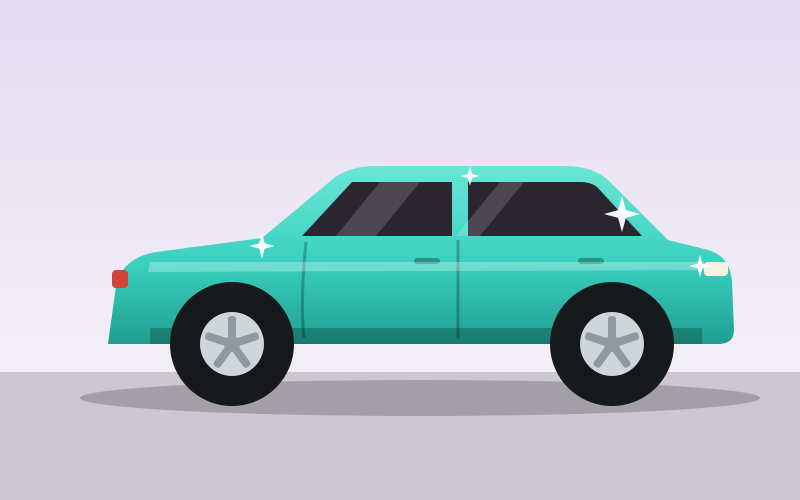
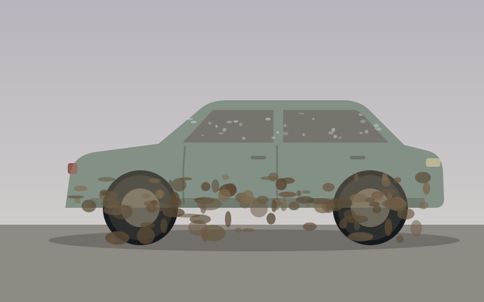
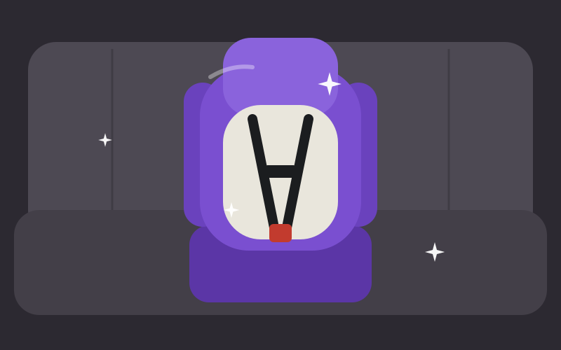
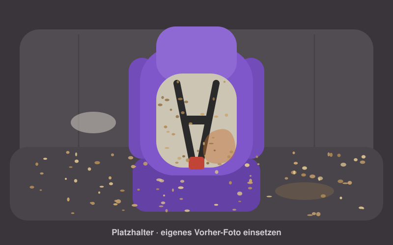
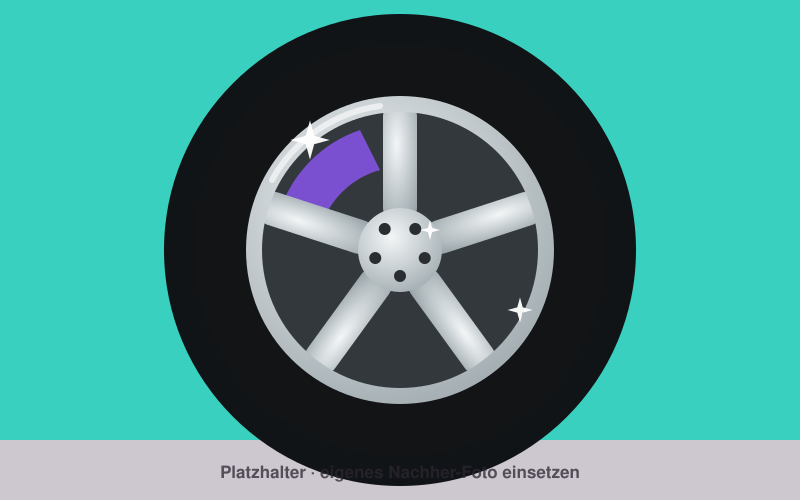
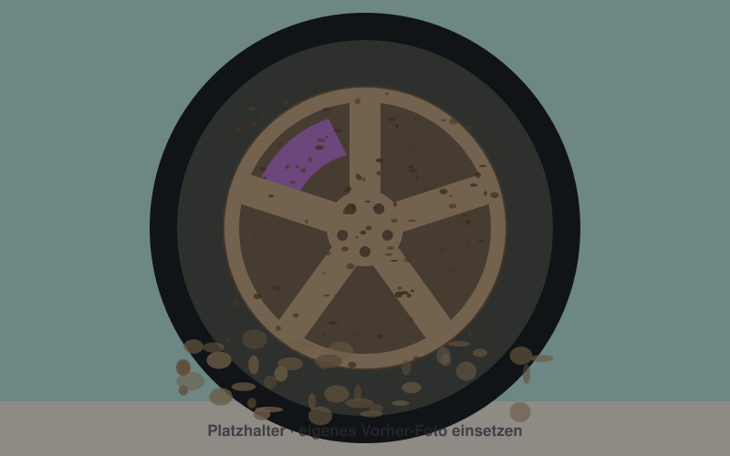
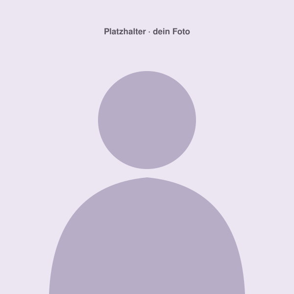

Werterhalt
Vogelkot, Baumharz und Streusalz fressen sich in den Lack, wenn sie zu lange drauf bleiben. Wer pflegt, hat länger Freude am Auto und bekommt beim Verkauf mehr dafür.
Ich bin Max und mache mobile Autoaufbereitung. Du bleibst, wo du bist, ich komm mit allem, was ich brauche, in deine Einfahrt, an den Carport oder auf den Firmenparkplatz. Danach glänzt dein Auto außen und ist innen hygienisch rein. Zügig, pH-neutral und ohne Silikon. Und Mamas bekommen 20 % Rabatt.


Du sitzt jede Woche Stunden in deinem Auto, oft mit deinen Liebsten. Vier gute Gründe, es gut zu behandeln.
Vogelkot, Baumharz und Streusalz fressen sich in den Lack, wenn sie zu lange drauf bleiben. Wer pflegt, hat länger Freude am Auto und bekommt beim Verkauf mehr dafür.
In Sitzen, Teppichen und Lüftung sammeln sich Staub, Pollen, Krümel und Keime. Das atmest du bei jeder Fahrt ein. Deine Kinder auch.
Freie Sicht ist kein Luxus. Ein Schmierfilm innen auf der Scheibe blendet bei tiefer Sonne und im Winter richtig fies.
Einsteigen, es riecht frisch, nichts klebt. Das macht jede Fahrt entspannter, auch morgens um halb acht auf dem Weg zur Kita.
Der erste Tag in der Kita. Der Ausflug an den See, bei dem alle lauthals mitsingen. Die Heimfahrt vom Spielplatz, auf der plötzlich alle selig schlafen. Im Familienauto erlebt ihr die tollsten Sachen. Nur bleibt auf dem Weg dahin eben immer was liegen:
Ich mach das weg. Gründlich, hygienisch rein und genau da, wo dein Kind sitzt. Damit ihr gleich ins nächste Abenteuer starten könnt.
Warum Dampf? Heißer Dampf löst Flecken und macht Keime platt, ganz ohne scharfe Reiniger. Da, wo dein Kind sitzt und alles anfasst, bleibt keine Chemie zurück. Die Gurte vom Kindersitz reinige ich nach Herstellerangabe, damit sie sicher bleiben.
Mein Anspruch: Dein Auto sieht danach besser aus als an dem Tag, an dem du es abgeholt hast. So, wie es sich das Werk gedacht hat: Der Lack glänzt, Kunststoff bleibt matt, nichts speckt. Dafür arbeite ich zügig, mit Plan und nur mit Mitteln, die Lack, Innenraum und Haut schonen.
pH 0–2 · stark sauer
Aggressive Felgen- und Rostlöser für festgebackenen Dreck. Greifen Chrom, Lack und Dichtungen an, wenn man nicht aufpasst.
Bei mir: nur im Notfall
pH 3–5 · sauer
Leicht saure Mittel lösen hartnäckige Kalkränder und Wasserflecken auf Lack und Scheiben. Ehrlich gesagt ist das fast nie nötig, meistens reicht neutral völlig.
Bei mir: fast nie
pH 6–8 · neutral
Shampoo, Innenraum, Polster, Kindersitz, Leder. Schont Lack, Versiegelung und Haut. Das meiste an deinem Auto braucht nichts anderes.
Bei mir: fast immer
pH 9–11 · alkalisch
Leicht alkalische Vorreiniger lösen Insektenreste, Fettfilm und Grauschleier. Hier ist neutral manchmal einfach zu schwach, und danach hält die Pflege besser.
Bei mir: regelmäßig außen, sparsam dosiert
pH 12–14 · stark alkalisch
Starke Fettlöser für Motorraum, Öl und völlig verdreckte Felgen. Wirken richtig, müssen aber schnell wieder runter.
Bei mir: selten und nur außen
Ich hab einen festen Ablauf, jeder Handgriff sitzt. Du bist dein Auto nur kurz los, und nichts wird vergessen.
Mein Standard für Lack, Innenraum und alles, was dein Kind anfasst. Ganz ohne sauer oder alkalisch geht’s aber nicht. Gegen Insekten oder Fett nehme ich das Richtige, gezielt und sparsam.
Kein Glanzspray auf Cockpit, Kunststoff oder Reifen. Das glänzt kurz, zieht Staub an und sieht billig aus. Ich hol die Oberfläche zurück, wie sie ab Werk war: matt, wo sie matt sein soll.
Heißer Dampf holt den Dreck aus Polstern, Lüftung und Ritzen und tötet dabei Keime ab. Hygiene ohne Chemiekeule.
Fahr drüber oder zieh am Regler. Die Bilder sind noch Platzhalter, echte Fotos von meinen Aufträgen kommen bald.




Ich versiegle deine Scheiben mit einer Profi-Beschichtung. Danach perlt das Wasser während der Fahrt von allein ab, die Wischer haben kaum noch was zu tun, und du siehst auch bei Starkregen und nachts klar, was vor dir passiert. Mehr Durchblick heißt mehr Sicherheit, gerade mit den Kids hinten drin.
Günstiger als Carglas.
Besser als Glaco.
Gibt’s als Extra zu jedem Paket. Frag einfach danach.
Damit du ungefähr weißt, woran du bist. Die Preise gelten für Kleinwagen bis Kompaktklasse.
Innen oder außen
ab 90 €
Mit Mama-Rabatt ab 72 €
Dauer ca. 1,5–2 Stunden
Innen und außen, mit Dampf
ab 200 €
Mit Mama-Rabatt ab 160 €
Dauer ca. 3–4 Stunden
Das volle Programm
ab 500 €
Mit Mama-Rabatt ab 400 €
Dauer ca. 1 Tag
Die drei Pakete sind nur ein grober Rahmen. Ein Kleinwagen nach dem Wocheneinkauf ist was anderes als ein Familien-Van nach drei Wochen Kita, Fußballtraining und Urlaubsfahrt.
Deshalb schau ich mir dein Auto erst an, und wir reden kurz darüber, was dir wichtig ist. Dann bekommst du einen festen Preis. Ehrlich und ohne Überraschungen.
– dein Max
Unverbindlich anfragenKleinwagen oder Siebensitzer, Stoff oder Leder.
Ein bisschen Alltagsstaub oder die Reste vom letzten Kindergeburtstag.
Tierhaare weg, zweiter Kindersitz, Scheinwerfer wieder klar? Sag einfach, was du brauchst.
Anrufen, WhatsApp oder Mail. Ein paar Fotos vom Auto helfen mir schon viel.
Ich schau mir dein Auto kurz an und nenne dir einen festen Preis.
Zum Wunschtermin, dahin wo dein Auto steht. Du machst in der Zeit einfach dein Ding.
Außen glänzend, innen hygienisch rein. Und es riecht endlich wieder nach nichts.

Ich bin Max. Ich mach Autos sauber, gründlich und ohne Schnickschnack. Und weil ich zu dir komme, musst du dafür nirgendwo hin.